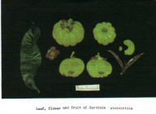

|
ECONOMICALLY
IMPORTANT PLANTS OF INDIA |
| Under-utilized Food and Fodder species and their wild relatives | Contributed by Ms.M.L Annapurna And Dr. Dhanapal, UAS, Bangalore |
Garcinia atroviridis Griff.
Taxonomic Details

----- Correct Name
----- Classification
----- Synonyms
----- Common Names
Other Biological Details
----- Habit and Habitat
----- Diagnostic Features
----- Reproductive Biology
---------- Breeding System
---------- Phenology
---------- Pollinators
---------- Seed Biology
----------Seed Germination
------ Cultivation
----- Major Pests and Diseases
Economic Potential and Uses
----- Parts Used
----- Uses
----- Harvesting Practices
----- Produce and Products
----- Chemistry
----- Processing Techniques
----- Other uses
----- Economic Potential to the
Country
----- Export Potential
Miscellaneous Information
Literature
HABIT & HABITAT:
A
moderate sized graceful tree 30-50 ft. high, found in the north eastern districts
of upper Assam. Biotic zone belongs western ghats, it is distributed in Arunachal
Pradesh
Availability :
Status :
REPRODUCTIVE BIOLOGY :
Several male
flowers are borne together on the end of twigs. Female flowers are solitary,
4-5 cm wide, having 4 thick green sepals and 4 fleshy dark red petals with red
stigma. The fruits are globose and about 7-10 cm in diameter. A mature fruit
can weigh up to 2 kg. The fruit contains 12-16 grooves from top to bottom, with
a fruit stalk 3-4 cm long. The bright orange-yellow fruit skin is thin and smooth.
The fruit contains several seeds 1.5 cm long, which are flattened and surrounded
by bright orange pulp (arillode).
Phenology :
It flowers during March - October (01).
Pollinators:
Seed Biology :
Seed Germination:
Cultivation:
MAJOR PESTS & DISEASES
Pests:
Diseases:
Economic
Potential and Uses
Parts used :
Fruits.
Uses:
The fruit rind is
too sour to be eaten raw, but tastes excellent when stewed with sugar. The round
fruits are borne singly on twig ends 7 - 10 cm dia. They are heavy, Ingitudinally
grooved by 12 to 16 and are flattened at the apex. The ripe fruits are bright-orange-yellow
are sliced, dried and used in curries or stewed in plenty of sugar and eaten.
Harvesting
Practices
Produce and Products
1. http://agrolink.moa.my/doa/BI/Agrigarden/gar.html.
2. http://www.fao.org/DOCREP/004/AB777E/ab777e05.htm#bm5.17
3. The wealth of India: Raw materials, CSIR, New Delhi, 2000, Vol-IV,p.99
.jpg){kind=link}